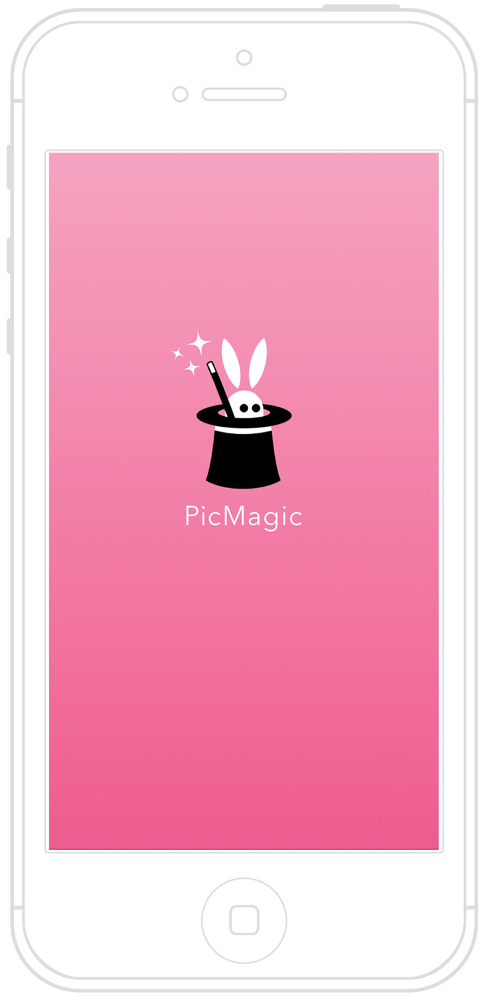
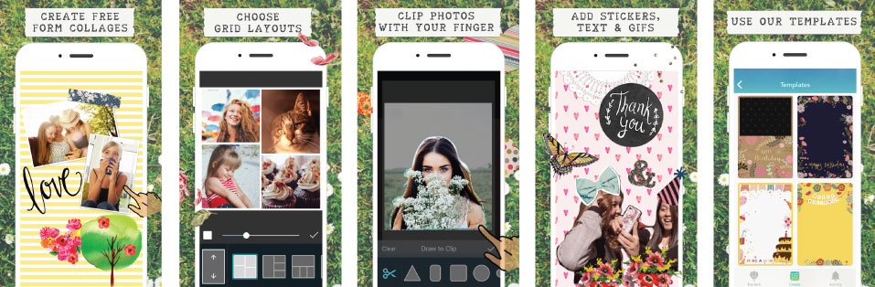
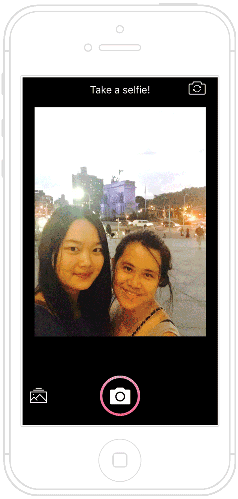
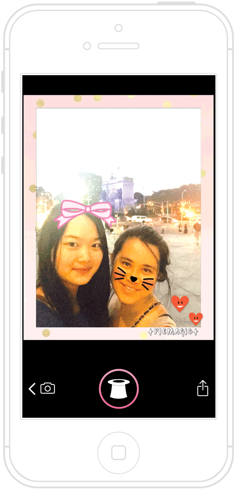
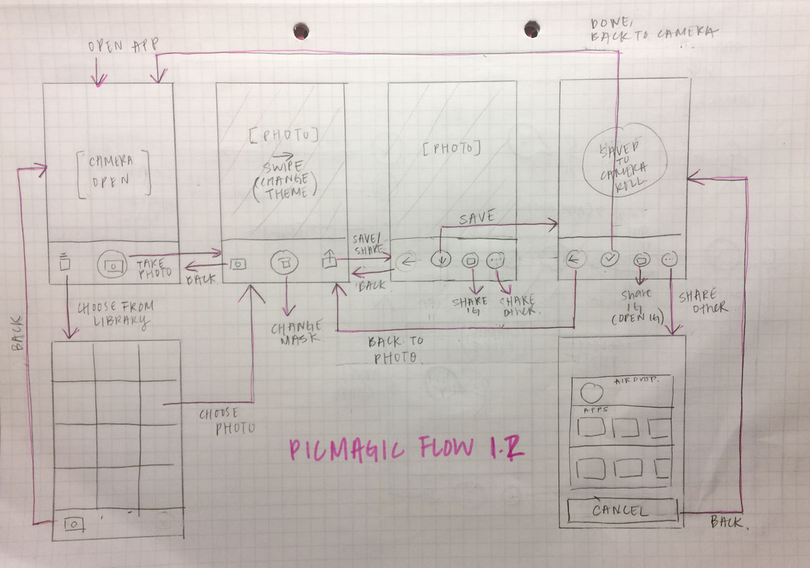

PicMagic

A mobile app that automatically applies frames and masks to your selfies
Currently available for free on iOS App Store
Inspired by PicCollage, Developed by Cardinal Blue
PicMagic was inspired by PicCollage, an iOS, Android, and Windows mobile app developed by Cardinal Blue Software with over 17 million monthly active users. PicCollage lets users create photo collages using any photos and in-app visual content.PicCollage Screenshots
A new way to add content
With the advent of apps like Snapchat, we realized that users desire a way to personalize their photos automatically and share them as an intimate experience. At PicCollage, we wanted to create a way for our users to eliminate the content browsing and photo editing process to the collage making task flow.Solution
PicMagic uses facial recognition technology to automatically apply fun masks, themes, and filters to eliminate the manual need to place masks themselves. It also adds an element of surprise of making the mask and theme random each time.Camera-First
The app opens to a front-facing camera mode with the prompt "Take a selfie" so that the user is prompted to take a selfie and see what the app does. It eliminates a user's effort to read instructions and immediately shows them how to use the app.User Persona: Tiffany
"I like creating collages and adding fun stickers to photos I take with my friends."

Tiffany wants to take a selfie with her friend and uses PicMagic. She's delighted to see stickers appear on their faces.

She finds a theme she likes and saves the photo to her phone.
Learnings
Designing the user flow for this app taught me about creating a visible mental model for the user. This app does not have a "home" page, but rather a circular flow that returns to the camera. I had to pay close attention to how a user knows "where" they are within the app and create a navigation system that makes logical sense according to a real physical space.Lastly, I realized that users still wish to have some control over what they are making, so I believe some balance between automation and sense of control is required. Even if they enjoy automatic placement of stickers, most users wish they were able to adjust their placement.
Wireframe
Process
interviews, userflow, wireframe, visual design, testing
I worked closely with a developer and product manager to develop this app. I was in charge of creating the user flow, interface, and visual design, but worked closely with all team members to get feedback for designs. I worked with the developer to implement the UI design. I designed the app icon, which had many versions, discussions, and tests before the current version was selected. Screens were prototyped using Sketch and Photoshop.
I worked closely with a developer and product manager to develop this app. I was in charge of creating the user flow, interface, and visual design, but worked closely with all team members to get feedback for designs. I worked with the developer to implement the UI design. I designed the app icon, which had many versions, discussions, and tests before the current version was selected. Screens were prototyped using Sketch and Photoshop.